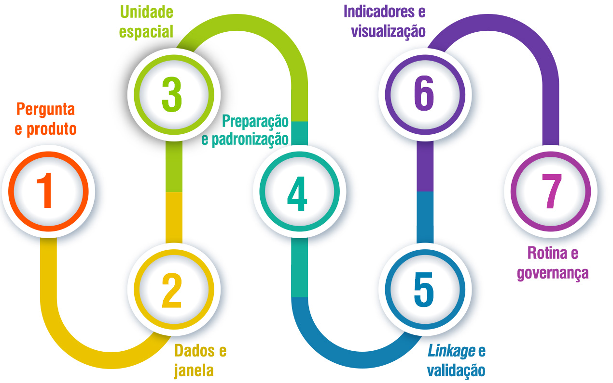

Linkage das bases climáticas e ambientais, educacionais e sociais para Vigilância em
Saúde
Sobre esta aula
Nesta aula, você compreenderá por que a Vigilância em Saúde
precisa integrar informações provenientes de diferentes áreas, como saúde, educação,
assistência social, clima e meio ambiente, para produzir análises mais completas e
apoiar decisões mais efetivas. Você conhecerá o conceito de linkage de
bases de dados, seus principais métodos, aplicações e desafios, entendendo como a
integração de informações amplia a capacidade de identificar populações vulneráveis,
antecipar riscos e fortalecer as ações de vigilância.
Ao longo do percurso, também serão discutidos aspectos
éticos, legais e de governança relacionados ao uso integrado de dados, destacando a
importância da qualidade da informação, da proteção da privacidade e da
transparência para uma Vigilância em Saúde orientada por evidências.
Objetivos
de
aprendizagem
Ao final desta aula, esperamos que você seja capaz de:
Reconhecer porque a Vigilância em Saúde precisa incorporar
determinantes sociais, ambientais e climáticos.
Explicar o que é linkage de bases de dados e em que
situações ele é necessário.
Identificar fontes de dados relevantes (saúde, educação,
assistência social, clima/ambiente) e suas limitações.
Diferenciar linkage determinístico e probabilístico,
descrevendo requisitos mínimos e riscos de erro.
Propor um desenho simples de integração de bases para um problema
de vigilância (ex.: calor extremo, arboviroses, doenças respiratórias),
incluindo variáveis, recortes territoriais e validação.
Mapear desafios éticos, legais e institucionais e sugerir soluções
de governança.
Introdução
Vigilância em Saúde não é sinônimo de contagem de casos.
Contar casos é o começo, não o fim. O valor da vigilância está em produzir
informação acionável: aquilo que permite reduzir risco, direcionar recursos e
diminuir danos antes que se consolidem. Na prática, isso exige compreender não
apenas “o que aconteceu”, mas “em quem”, “onde”, “sob quais condições” e “quais
fatores estruturais aumentam a probabilidade de repetição”.
Os sistemas clássicos de vigilância, centrados em
notificações, internações e óbitos, são imprescindíveis para detectar surtos e
acompanhar tendências. Ainda assim, eles carregam um limite óbvio: observam o
desfecho quando a cadeia causal já se materializou. Em temas como clima e saúde,
esse atraso custa caro. O calor extremo, a piora da qualidade do ar, as enchentes e
os deslizamentos são riscos previsíveis, territorialmente localizados e socialmente
seletivos. Em geral, atingem com maior intensidade grupos com menos infraestrutura,
menos proteção social e menor capacidade de adaptação.
A vigilância baseada em determinantes busca fechar esse “vão”
entre risco e desfecho. Ela combina informação clínica com informação social,
educacional, ambiental e territorial. O resultado é um retrato mais fiel do risco,
com capacidade de priorização e prevenção: bairros com maior vulnerabilidade ao
calor, populações com maior risco respiratório durante períodos de fumaça,
territórios com maior risco de arboviroses sob certos regimes de chuva e
temperatura.
O linkage de bases de dados é o mecanismo técnico
que permite essa integração. Ele não é uma tecnologia “mágica”; é uma forma
disciplinada de vincular registros que se referem à mesma pessoa, família, escola,
serviço ou território, mesmo quando a informação está fragmentada em sistemas
distintos. A qualidade do linkage e a qualidade do desenho analítico são,
portanto, determinantes da utilidade da vigilância integrada.
Determinantes sociais, educação e saúde:
mecanismos, não slogans
Determinantes Sociais da Saúde (DSS) não são um
slogan normativo; são um mecanismo explicativo. A desigualdade social
altera padrões de exposição ao risco, de acesso à proteção e de capacidade de
resposta.
Grupos mais pobres e com menor escolaridade tendem a viver em áreas mais
expostas, com menor infraestrutura e menor capacidade de absorver
choques, e por isso, adoecem mais e morrem mais, sobretudo em situações
de crise.
A educação é um eixo estrutural desse mecanismo. Ela
opera como “porta de entrada” para oportunidades ao longo do ciclo de vida, como
por exemplo:
Renda.
Ocupação.
Estabilidade.
Acesso à informação.
Letramento em saúde.
A escolaridade também influencia a relação com o
Estado, pois pode influenciar na capacidade de:
Obter benefícios.
Acessar serviços.
Compreender avisos sanitários.
Navegar redes de proteção.
Por isso, bases educacionais são úteis para
vigilância, não porque “educação causa doença” de modo direto, mas porque a
trajetória educacional organiza, ao longo do tempo, um conjunto de condições que
aumentam ou reduzem risco.
Em vigilância, a principal utilidade de bases sociais e
educacionais é permitir a estratificação de risco, que identifica com critérios
transparentes quais grupos estão mais expostos e por quê. Sem isso, a política
pública trataria todos como iguais, e na prática, conservaria desigualdades.
Essa estratificação não é apenas ética, ela é operacional, pois melhora a
alocação de equipes, orienta ações preventivas e define prioridades de
comunicação em saúde. Para isso, o desenho de integração deve evitar dois erros
comuns:
Recurso Interativo
Erro comum nº 1
Clique para
revelar
O primeiro é transformar determinantes em "variáveis
decorativas" (renda, escolaridade, raça/cor) sem hipótese
explicativa e sem tradução para decisão.
Erro comum nº 2
Clique para
revelar
O segundo é assumir que o dado social explica tudo e, por
isso, negligenciar o território, o ambiente e a capacidade
dos serviços.
Uma vigilância robusta integra:
Condição social.
Exposição ambiental/climática.
Acesso e resposta do sistema de
saúde.
Dinâmica territorial e de
mobilidade.
Clima, ambiente e saúde: o risco é
previsível, mas a vulnerabilidade é social
Do ponto de vista epidemiológico, clima e ambiente afetam
saúde por múltiplas vias:
Estresse térmico
(ondas de calor e frio) e vetores (chuva e temperatura
alteram ciclos de transmissão).
Qualidade do ar
(poluentes, fumaça de queimadas).
Água e saneamento
(enchentes, contaminação).
Segurança
alimentar (secas e choques na produção).
Desastres
(deslocamento, trauma, ruptura de serviços).
Como você pode perceber, há um aspecto crucial: a
exposição ambiental não é “democrática”. O mesmo evento climático pode produzir
impactos distintos dependendo de infraestrutura urbana, condições de moradia,
presença de áreas verdes, acesso à água, densidade habitacional, capacidade de
resposta do serviço de saúde e rede de proteção social.
Em termos de vigilância, isso significa que o foco não deve ser apenas o
evento (calor, chuva, fumaça), mas a combinação evento ×
vulnerabilidade.
Esse raciocínio muda a prática. Em vez de monitorar
apenas internações por causas respiratórias, a vigilância integrada monitora:
Piora da qualidade do ar.
Territórios com maior proporção de grupos de risco (idosos,
crianças, comorbidades).
Barreiras de acesso ao cuidado.
Veja como isso pode funcionar na
prática.
Em vez de reagir à explosão de casos de dengue, a
vigilância integrada acompanha regimes de chuva/temperatura, acúmulo de
criadouros em territórios vulneráveis e capacidade de resposta local. Isso não
substitui a vigilância epidemiológica clássica, ela a torna mais eficiente.
O desafio operacional é transformar dados
ambientais/climáticos, frequentemente contínuos e georreferenciados, em
indicadores compatíveis com sistemas de decisão. Para isso, é necessário:
definir janela temporal (dias/semanas), definir unidade espacial (bairro, setor
censitário, município), definir limiares (ex.: dias consecutivos acima de
determinado percentil de temperatura) e, principalmente, integrar isso com dados
sociais e de saúde. É aqui que o linkage se torna indispensável.
Território e vigilância: por que a
unidade de análise importa?
A vigilância integrada exige uma decisão inicial que
costuma ser subestimada: Qual é a unidade de análise (pessoa, domicílio, escola,
estabelecimento de saúde, bairro, setor censitário, município)? Cada escolha
abre e fecha possibilidades. Vamos ver alguns exemplos?
Quando o problema de saúde é fortemente condicionado por
território (enchentes, calor urbano, qualidade do ar), unidades espaciais
menores tendem a captar melhor a heterogeneidade do risco, mas atenção: unidades
menores exigem dados mais detalhados e cuidados adicionais de privacidade. Se o
objetivo é gestão e pactuação federativa, o município pode ser a unidade mais
prática. Já quando o foco é a intervenção comunitária, o bairro pode ser mais
útil.
Uma aula sobre linkage precisa explicitar essa
decisão porque o desenho de integração depende dela.
Outra decisão é a janela temporal. Dados climáticos podem
ser horários ou diários; dados de saúde podem ser semanais ou mensais; dados
sociais costumam ser atualizados com menor frequência. Integrar essas bases
exige escolher janelas comparáveis e justificar o alinhamento temporal. A regra
prática é simples: alinhar a janela de exposição (clima/ambiente) com a janela
de desfecho (internações, óbitos, notificações), e usar o dado social como
estratificador mais estável, sempre deixando claro o período de referência de
cada base.
Por fim, a vigilância territorial precisa evitar a
armadilha da “média municipal”. Em temas de vulnerabilidade, o risco raramente é
uniforme no município. Sempre que possível, a vigilância deve buscar
granularidade suficiente para orientar ação, sem comprometer privacidade. Isso
exige governança e critérios: quais recortes são permitidos? Quais indicadores
são divulgados publicamente e quais ficam restritos?
Linkage: conceito, finalidades e
riscos
Linkage é o processo de vincular registros que
se referem à mesma entidade (pessoa, família, endereço, escola, serviço) em
bases diferentes. Ele existe porque o Estado produz informação de forma
fragmentada: saúde tem seus sistemas, educação tem os seus, assistência tem os
seus, e ambiente/clima frequentemente está em bases geoespaciais. Se o objetivo
é vigilância integrada, essa fragmentação precisa ser superada analiticamente.
O Linkage não é um fim, ele serve a finalidades
bem concretas, são elas:
Completar informação.
Reduzir subregistro.
Criar coortes administrativas.
Permitir estratificação de risco.
Avaliar políticas.
Produzir alertas territorializados.
Em saúde, o linkage é especialmente útil
para construir trajetórias. Clique em cada período da linha do tempo para ver os
detalhes:
Recurso Interativo
Antes
O linkage é
importante para mapear
dados sobre exposição e vulnerabilidade.
Durante
O linkage
vincula dados sobre a
ocorrência e o acesso ao serviço.
Depois
O linkage pode
trazer dados sobre
desfechos e consequências depois do evento.
Contudo, há riscos nesse processo, veja:
O primeiro é o erro de
vinculação: unir dois registros de pessoas diferentes
(falso positivo) ou deixar de unir registros da mesma
pessoa (falso negativo).
O segundo é a reidentificação
indevida em bases integradas.
O terceiro é o "linkage sem
hipótese": vincular por vincular, produzindo grandes
bases sem utilidade e com alto risco institucional.
É importante lembrar que uma vigilância madura define perguntas, define
produtos e só então define o linkage necessário.
Fontes de dados: o que integrar e como
ler cada base
Uma vigilância integrada costuma combinar quatro famílias
de dados: saúde, assistência/social, educação e ambiente/clima. Cada família tem
“lógica de produção” própria, e ignorar essa lógica é receita para erro
interpretativo. A seguir veja mais detalhes sobre cada uma das famílias de
dados:
Bases como mortalidade, nascidos
vivos, internações e notificações são registradas por
serviços, com objetivos administrativos e clínicos. Elas
sofrem com atraso de digitação, mudanças de codificação e
subregistro em determinados territórios. O analista precisa
conhecer a cobertura, o atraso típico e a estabilidade das
variáveis.
Bases sociais (ex.: cadastros de
programas) são produzidas para focalização e gestão de
benefícios. Elas trazem riqueza de informação
socioeconômica, mas são sensíveis à atualização e à dinâmica
de elegibilidade. Em geral, representam melhor populações
vulneráveis, mas não “a população inteira”. Isso não é
defeito; é característica. Para vigilância, o uso típico é
estratificar risco e identificar bolsões de vulnerabilidade.
Bases educacionais registram
matrícula, frequência, trajetória e, em alguns sistemas,
desempenho. Elas têm enorme valor para análise de ciclo de
vida, principalmente para crianças e adolescentes. Para
vigilância, são úteis em agravos com forte componente de
vulnerabilidade social, em políticas de promoção da saúde no
ambiente escolar e em estratégias de comunicação e busca
ativa.
Essas bases costumam ser
georreferenciadas, contínuas e de alta frequência. O desafio
é traduzi-las em indicadores acionáveis. A regra é: definir
o indicador, definir o recorte espacial, definir a janela
temporal e documentar a transformação. Em vigilância, o
método importa tanto quanto o número final.
Métodos de linkage:
determinístico e probabilístico
O linkage determinístico utiliza chaves exatas:
um identificador comum (CPF, CNS, número de matrícula) ou combinações de campos
com alta confiabilidade. Sua vantagem é a precisão quando a chave é correta. Sua
limitação é a dependência de completude e padronização. Em bases com alta
incompletude, o linkage determinístico pode “perder” muitos registros,
produzindo falso negativo em larga escala.
Já o linkage probabilístico é utilizado quando
não existe identificador único ou quando a qualidade do identificador é
insuficiente. Ele trabalha com campos como nome, data de nascimento, sexo,
município, endereço. Em vez de exigir igualdade exata, calcula probabilidade de
dois registros pertencerem à mesma pessoa. Para funcionar bem, exige
padronização de texto (remoção de acentos, normalização de abreviações),
definição de regras de bloqueio (para reduzir comparações) e calibração de
limiares.
Em vigilância, o método não deve ser decidido por
preferência, mas por viabilidade. Se existe identificador robusto, use
determinístico. Se não existe, use probabilístico com transparência: documente
variáveis usadas, limiares e taxas estimadas de erro. O que não é aceitável é
tratar linkage probabilístico como “caixa-preta”. Em decisões de
política pública, a auditabilidade é parte do rigor.
Um ponto prático: sempre que possível, execute validações
internas. Por exemplo, ao vincular saúde e educação, verifique consistência de
idade, município e sexo. Em bases territoriais, verifique consistência de
endereço e geocodificação. O objetivo é reduzir falso positivo e falso negativo
e produzir confiança institucional no processo.
Produto Mínimo Viável para vigilância
integrada
A vigilância integrada não precisa começar com um projeto
“monumental”. Ela pode começar com um Produto Mínimo Viável, disciplinado, com
entregáveis claros.
Um Minimum Viable Product (MVP), em português Produto
Mínimo Viável, bem desenhado reduz risco institucional e gera aprendizado
rápido. Veja agora um passo a passo para construir o fluxo de um MVP:
Recurso Interativo

Casos típicos de uso: como o
linkage muda a decisão
Agora, você verá alguns casos típico, e em todos eles, o
linkage é um meio para construir informação acionável. Ele permite que
a vigilância responda à pergunta correta: não apenas “onde há casos”, mas “onde
o risco é maior e por quê”.
Calor extremo e
mortalidade/atendimento
Uma rotina integrada pode combinar
temperatura
diária, registros de óbitos, internações por causas
cardiovasculares e
respiratórias, e composição demográfica por território. O
objetivo não é
"provar causalidade" a cada semana; é detectar aumento de risco,
orientar
comunicação e ajustar oferta de serviços (hidratação,
acolhimento, triagem).
Arboviroses e ambiente urbano
Integração entre notificações, dados
meteorológicos (chuva/temperatura), indicadores de saneamento e
vulnerabilidade social permite antecipar áreas de maior risco e
orientar
ações de controle vetorial antes do pico de casos. A vigilância
se torna
preventiva e territorialmente focalizada.
Doenças respiratórias e
qualidade do ar
Vincular qualidade do ar (ou proxy
de fumaça),
internações e condições sociais permite diferenciar "piora
generalizada" de
"piora seletiva", e orientar ações específicas em territórios
com maior
vulnerabilidade.
Ética, privacidade, LGPD e governança: o
que não pode ser improvisado
Bases integradas aumentam poder analítico e aumentam
risco. O risco principal é a exposição indevida de dados pessoais e a
reidentificação, especialmente quando se combinam variáveis sensíveis e recortes
territoriais finos. A Lei Geral de Proteção de Dados (LGPD) estabelece
princípios e bases legais para tratamento de dados pessoais, incluindo no setor
público. Em vigilância, é essencial que a integração seja orientada por
finalidade pública clara, minimização de dados e segurança.
Na prática, isso implica:
Limitar acesso a ambientes controlados.
Separar chaves de identificação e bases analíticas, quando
possível.
Aplicar técnicas de anonimização/pseudonimização adequadas ao
risco.
Adotar regras de divulgação com agregação mínima e supressão de
células pequenas.
Registrar decisões e autorizações. Governança não é burocracia;
é condição de sustentabilidade.
Também é necessário um acordo institucional
explícito.
Integração entre saúde, educação, assistência e ambiente não acontece “por boa
vontade”. Ela exige pactuação de papéis, responsabilidades, critérios de
compartilhamento e rotinas de auditoria. Uma vigilância integrada só se sustenta
quando o arranjo institucional é tão robusto quanto o arranjo técnico.
Atividade
Questão 01 de 02
Acertos: 0
Selecione uma opção para confirmar
sua
resposta.
Resumo da aula
Nesta aula, você compreendeu que a Vigilância em Saúde se
torna mais efetiva quando integra informações provenientes de diferentes
setores, como saúde, educação, assistência social, clima e meio ambiente. Você
conheceu o conceito de linkage de bases de dados, seus principais métodos,
aplicações e limitações, além de entender como essa integração permite
identificar vulnerabilidades, antecipar riscos e apoiar decisões mais
qualificadas.
Também refletiu sobre a importância da definição da
unidade de análise, da qualidade das bases de dados, da validação das
informações e dos princípios éticos, legais e de governança, reconhecendo que
uma vigilância integrada depende tanto de boas técnicas de análise quanto de um
uso responsável e seguro dos dados.
Você concluiu esta aula, continue se empenhando
nos seus estudos. Siga para a próxima aula!